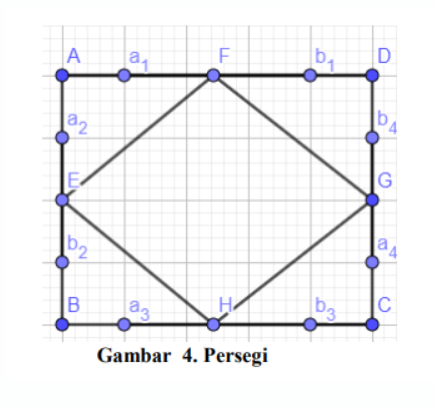
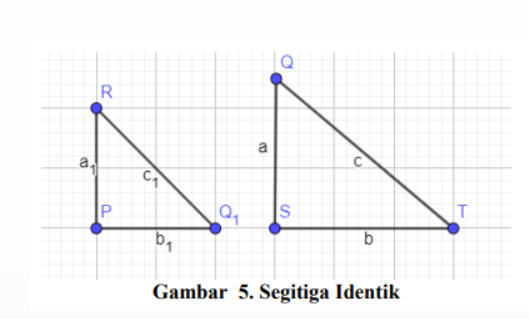
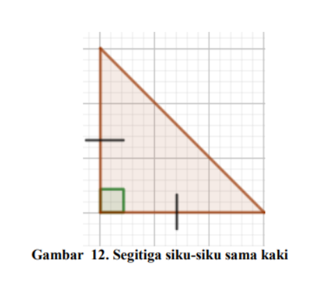

<!DOCTYPE html>
<html lang="en">

<head>
  <meta charset="utf-8">
  <meta content="width=device-width, initial-scale=1.0" name="viewport">

  <title>Tugas Hani</title>
  <meta content="" name="description">
  <meta content="" name="keywords">

  <meta property="og:title" content="">
  <meta property="og:image" content="">
  <meta property="og:url" content="">
  <meta property="og:site_name" content="">
  <meta property="og:description" content="">

  <meta name="twitter:site" content="">
  <meta name="twitter:title" content="">
  <meta name="twitter:description" content="">
  <meta name="twitter:image" content="">

  <!-- Favicons -->
  <link rel="shortcut icon" href="LOGO-UNTIRTA.png">

  <!-- Google Fonts -->
  <link href="https://fonts.googleapis.com/css?family=Open+Sans:300,300i,400,400i,700,700i|Raleway:300,400,500,700,800" rel="stylesheet">

  <!-- Vendor CSS Files -->
  <link href="assets/vendor/aos/aos.css" rel="stylesheet">
  <link href="assets/vendor/bootstrap/css/bootstrap.min.css" rel="stylesheet">
  <link href="assets/vendor/bootstrap-icons/bootstrap-icons.css" rel="stylesheet">
  <link href="assets/vendor/glightbox/css/glightbox.min.css" rel="stylesheet">
  <link href="assets/vendor/swiper/swiper-bundle.min.css" rel="stylesheet">

  <!-- Template Main CSS File -->
  <link href="assets/css/style.css" rel="stylesheet">

  <!-- =======================================================
  * Template Name: Imperial - v5.7.0
  * Template URL: https://bootstrapmade.com/imperial-free-onepage-bootstrap-theme/
  * Author: BootstrapMade.com
  * License: https://bootstrapmade.com/license/
  ======================================================== -->
</head>

<body>

  <!-- ======= Hero Section ======= -->
  <section id="hero">
    <div class="hero-container">
      <div data-aos="fade-in">
        <div class="hero-logo">
        </div>

        <h1>Hanifa Nur Fidhia Andriana Putri</h1>
        <h2>Tugas  <span class="typed" data-typed-items="Pythagoras"></span></h2>
        <div class="actions">
          <a href="#about" class="btn-get-started">Next...</a>
        </div>
      </div>
    </div>
  </section><!-- End Hero -->

  <!-- ======= Header ======= -->
  <header id="header" class="d-flex align-items-center">
    <div class="container d-flex align-items-center justify-content-between">

      <a href="index.html" class="logo mr-auto"></a>
      <!-- Uncomment below if you prefer to use a text logo -->
      <h1 class="logo mr-auto"><a href="index.html">Hanifa Nur Fidhia A P</a></h1> 

      <nav id="navbar" class="navbar">
        <ul>
          <li><a class="nav-link scrollto active" href="#hero">Halaman Utama</a></li>
          <li><a class="nav-link scrollto" href="#about">Pengertian</a></li>
          <li><a class="nav-link scrollto" href="#services">Sejarah</a></li>
          <li><a class="nav-link scrollto " href="#portfolio">Materi</a></li>
          <li><a class="nav-link scrollto" href="#a">Tokoh</a></li>
          <li class="dropdown"><a href="#"><span>Lainya...</span> <i class="bi bi-chevron-down"></i></a>
            <ul>
              <li><a href="gg.html">Geogebra</a></li>
              <li><a href="eval.html">EVALUASI</a></li>
              <li><a href="ksm.html">Kesimpulan</a></li>
              <li><a href="bio.html">Biografi</a></li>
            </ul>
          </li>
        </ul>
        <i class="bi bi-list mobile-nav-toggle"></i>
      </nav><!-- .navbar -->

    </div>
  </header><!-- End Header -->

  <main id="main">

    <!-- ======= About Section ======= -->
    <section id="about">
      <div class="container" data-aos="fade-up">
        <div class="row">
          <div class="col-md-12">
            <h3 class="section-title">Pengertian Pythagoras</h3>
            <div class="section-title-divider"></div>
          </div>
        </div>
      </div>
      <div class="container about-container" data-aos="fade-up" data-aos-delay="200">
        <div class="row">

          <div class="col-lg-6 about-img">
            
          </div>

          <div class="col-md-6 about-content">
            <h2 class="about-title">Pengertian</h2>
            <p class="about-text">
              Dalam matematika, teorema Pythagorean, juga dikenal sebagai teorema Pythagoras. Teorema pythagoras adalah hubungan mendasar dalam geometri Euclidean di antara tiga sisi segitiga siku-siku. Ini menyatakan bahwa luas kotak yang sisinya adalah sisi miring (sisi yang berlawanan dengan sudut kanan) sama dengan jumlah area kotak di dua sisi lainnya. Teorema ini dapat ditulis sebagai persamaan yang menghubungkan panjang sisi a, b dan c, sering disebut "persamaan Pythagoras"
            </p>
            <p class="about-text">
              Di mana c mewakili panjang sisi miring dan a dan b panjang dari dua sisi segitiga lainnya. Teorema itu, yang sejarahnya menjadi pokok perdebatan, dinamai untuk pemikir Yunani kuno Pythagoras.Teorema ini telah diberikan banyak bukti - mungkin yang paling banyak untuk setiap teorema matematika. Mereka sangat beragam, termasuk bukti geometris dan bukti aljabar, dengan beberapa berasal dari ribuan tahun yang lalu.
            </p>
            <p class="about-text">
              Beberapa ahli mengemukakan pendapatnya tentang pengertian teorema pythaghoras. Para ahli tersebut tentu saja mencari tahu terlebih dahulu mengenai konsepkonsep teorema pythagoras sebelum mereka mengeluarkan gagasan tentang teorema pythagoras. Menurut (Givental, 2006) Secara singkat teorema Pythagoras berbunyi “Pada sebuah segitiga siku-siku, kuadrat sisi miring (sisi di depan sudut siku-siku) sama dengan jumlah kuadrat sisi-sisi yang lain”. Teorema pythagoras pada dasarnya merupakan suatu teorema yang berlaku pada segitiga.
            </p>
          </div>
        </div>
      </div>
    </section><!-- End About Section -->

    <!-- ======= Services Section ======= -->
    <section id="services">
      <div class="container">
        <div class="row" data-aos="fade-up">
          <div class="col-md-12">
            <h3 class="section-title">Sejarah</h3>
            <div class="section-title-divider"></div>
            <p class="section-description">Teorema yang secara umum paling dikenal adalah teorema pythagoras. Selain dikenal, teorema ini merupakan teorema tertua dan sangat penting dalam matematika ((Sparks, 2013); (Maor, 2007)). Kurang lebih 4000 tahun yang lalu, teorema ini pertama kali muncul (Sparks, 2013). Semenjak masa itu, sudah banyak pakar yang membuktikannya dengan cara yang bervariasi. Sebagai contoh , terdapat 371 bukti yang dipaparkan dalam buku The Pytagorean Theorem: A 4000-Year History (Maor, 2007). Nama teorema ini diambil dari nama seorang matematikawan Yunani yang benama Pythagoras. Pythagoras lahir di pulau Samos, sekitar tahun 570 SM (Strathern, 2009).  </p>
            <p class="section-description">Diantara gurunya, Thaleslah yang memiliki pengaruh untuk Pythagoras. Thales memperkenalkan Pythagoras pada matematika dan astronomi. Berdasarkan nasehat gurunya Thales, Pythagoras muda mengunjungi Mesir sekitar tahun 547 SM dan menetap di sana untuk mempelajari lebih lanjut tentang matematika dan astronomi (Veljan, 2000). Pythagoras kembali ke Samos, tetapi segera meninggalkan pulau itu untuk melarikan diri dari kejaliman Polycrates, dan menetap di Croton, Italia Selatan. Disana ia mendirikan sekolah filsafat dan agama yang memiliki banyak pengikut. Para pengikut Pythagoras dikenal dengan sebutan mathematikoi (Veljan, 2000). Mathematikoi tinggal bersama masyarakat, tidak memiliki harta benda pribadi, dan bervegetarian. Mereka diajar oleh Pythagoras sendiri dan mematuhi aturan yang ketat. Menurut Veljan (2000), diantara keyakinan Pythagoras adalah, (1) realitas adalah dasar dari matematika, (2) filsafat dapat mengarah pada pemurnian spiritual, (3) jiwa bisa bangkit untuk bersatu bersama ilahi, (4) simbol tertentu memiliki makna mistik, dan (5) semua anggota harus menjaga kerahasiaan dan kesetiaan            </p>
            <p class="section-description">Dalam Veljan (2000) dijelaskan bahwa Pythagoras dan Mathematikoi mempelajari matematika, konsep bilangan, segitiga, dan bentuk ruang serta abstraksi dalam pembuktian. Mereka kurang tertarik dalam merumuskan dan memecahkan masalah. Pythagoras percaya bahwa semua alam dan keteraturannya dapat direduksi menjadi hubungan numerik. Ia mempelajari sifat-sifat bilangan genap, ganjil, segitiga dan bilangan sempurna, serta ia menetapkan “sifat” pada masing-masing angka. Angka mungkin cantik atau jelek, lengkap atau tidak lengkap, dan lain-lain. Sepuluh dianggap bilangan sempurna, hal ini disebabkan jika penulisan dalam bentuk titik maka akan membentuk segitiga sempurna, dan sepuluh terdiri dari jumlah empat bilangan bulat pertama (1 + 2 + 3 + 4 = 10)</p>
            <p class="section-description">Pythagoras dan para pengikutnya adalah yang pertama dalam sejarah yang memberikan pertimbangan geometris rasa ilmiah, dan mereka pertama kali menyadari perlunya pembuktian secara sistematis. Hanya dua abad kemudian, Euclid (1908) sepenuhnya memahami pendekatan ini dengan elemennya, yang berisi banyak gagasan Pythagoras, dan menetapkan standar baru untuk ketelitian matematika dan struktur logis (Veljan, 2000). Warisan terpenting Pythagoras adalah teorema terkenalnya. Namun, dalam beberapa bentuk, teorema ini telah dikenal jauh lebih awal, seperti yang kita ketahui dari gambar, teks, legenda, dan cerita dari Babilonia, Mesir, dan Cina, yang berasal dari tahun 1800-1500 SM (Veljan, 2000). Satu cerita terkenal menyatakan bahwa</p>
            <p class="section-description">para petani Mesir menggunakan tali dengan simpul-simpul yang berjarak sama untuk membentuk segitiga siku-siku 3 − 4− 5, yang mereka gunakan untuk mengukur ulang plot pertanian mereka yang dibanjiri Sungai Nil setiap tahun. Segitiga dengan panjang sisi 3, 4, dan 5, telah diketahui oleh Bangsa Mesir Kuno akan membentuk sebuah sudut siku-siku. Mereka menggunakan tali yang diberi simpul pada beberapa tempat dan menggunakannya untuk membentuk sudut siku-siku pada bangunan-bangunan mereka termasuk piramid (Sparks, 2013). Seperti gambar 1 di bawah ini.</p>
            <p class="section-description">Diyakini bahwa Bangsa Mesir Kuno memiliki banyak pengetahuan tentang segitiga dengan sisi 3, 4, dan 5 yang akan membentuk segitiga siku-siku. Sedangkan, teorema yang berlaku secara umum untuk segitiga siku-siku belum mereka ketahui. Di Cina, Tschou-Gun yang hidup sekitar 1100 SM juga mengetahui teorema ini. Demikian juga di Babylonia, teorema phytagoras ini telah dikenal pada masa lebih dari 1000 tahun sebelum Pythagoras. Sebuah keping tanah liat dari Babilonia pernah ditemukan dan memuat naskah yang bertuliskan sebagai berikut: “4 is length and 5 the diagonal. What is the breadth?” (Strathern, 2009).            </p>
            <p class="section-description">Pythagoras menemukan teoremanya saat menunggu di aula istana untuk diterima oleh Polycrates. Karena bosan, Pythagoras mempelajari ubin persegi batu di lantai dan membayangkan segitiga siku-siku "tersembunyi" di ubin bersama dengan bujur sangkar yang didirikan di sisi-sisinya. Setelah "melihat" bahwa luas persegi di atas hipotenusa sama dengan jumlah luas persegi di atas kaki, Pythagoras berpikir bahwa hal yang sama mungkin juga berlaku jika kedua kaki memiliki panjang yang tidak sama</p>
          </div>
        </div>

    <!-- ======= Subscrbe Section ======= -->
    <section id="subscribe">
      <div class="container" data-aos="fade-up">
        <div class="row">
          <div class="col-md-8">
            <h3 class="subscribe-title">UNTIRTA INSTAGRAM</h3>
          </div>
          <div class="col-md-4 subscribe-btn-container">
            <a class="subscribe-btn" href="https://www.instagram.com/untirta_official/">YUK FOLLOW!</a>
          </div>
        </div>
      </div>
    </section><!-- End Subscrbe Section -->

    <!-- ======= Portfolio Section ======= -->
    <section id="portfolio">
      <div class="container" data-aos="fade-up">
        <div class="row">
          <div class="col-md-12">
            <h3 class="section-title">Materi</h3>
            <div class="section-title-divider"></div>
            <center>
              <h3>I.1 Memeriksa kebenaran teorema Pythagoras</h3>
            </center>
            <p class="section-description">Teorema pythagoras berbunyi bahwa “ pada sembarang segitiga siku-siku, kuadrat dari panjang sisi terpanjang (hypotenusa) sama dengan jumlah dari kuadrat panjang masing-masing sisi-sisi segitiga yang lain. “. Disini kita akan membuktikan kebenaran teorema pythagoras dengan beberapa cara. Mari kita masuk kedalam cara yang pertama.</p>
            <center>
              <h3>I.1.1 Pembuktian pertama</h3>
              
            </center>
            <p class="section-description">Misalkan ABCD adalah sebuah persegi dengan panjang sisinya 𝑎 + 𝑏 satuan panjang. Misalkan F adalah titik pada AD dengan demikian 𝑃D = 𝑏1. Hal serupa berlaku untuk titik-titik E, G, H pada sisi DC, CB dan BA. Dapat ditunjukkan bahwa EFGH, dengan panjang sisi masing-masing c adalah sebuah persegi.</p>


              <p>Perhatikan bahwa:</p>
              
              
             <p> 𝐿𝑢𝑎𝑠 𝑃𝑒𝑟𝑠𝑒𝑔𝑖 𝐴𝐵𝐶𝐷 = 𝐿𝑢𝑎𝑠 𝑃𝑒𝑟𝑠𝑒𝑔𝑖 𝑃𝑄𝑅𝑆 + (4 × 𝐿𝑢𝑎𝑠 ∆ 𝐴𝑃𝑆)</p>
              
             <p>(𝑎 + 𝑏)² = 𝑐² +(4 × ½ × 𝑎 × 𝑏)</p> 
              
             <p>𝑎²+ 2𝑎𝑏 + 𝑏² = 𝑐² + 2𝑎𝑏</p> 
              
              <p>𝑎² + 𝑏² = 𝑐²</p>
            <center><h3>I.1.2 Pembuktian Kedua</h3></center>
            <p class="section-description">Bukti cara 2 ini ditemukan oleh Presiden Amerika Serikat J.A. Garfield pada tahun 1876 (Jupri, 2019). Dalam pembuktiannya, ia menggunakan rumus luas trapesium. Pertama dibuatkan segitiga yang identik yaitu ∆𝑃𝑄𝑅 dan ∆𝑆𝑇𝑄. Panjang sisi 𝑃𝑅 = 𝑆𝑄 = 𝑎, 𝑃𝑄 = 𝑆𝑇 = 𝑏 dan 𝑄𝑅 = 𝑇𝑄 = 𝑐. Dimana 𝑄𝑅 = 𝑇𝑄 = 𝑐 sebagai sisi miring.</p>
            <center>
              
              <p>Kemudian pada sisi 𝑃𝑄 = 𝑏 disusun dan bertemu dengan sisi 𝑄𝑆 = 𝑎 sehingga membentuk suatu garis PS seperti gambar berikut :</p>
              
              <p>Kemudian pada sisi 𝑃𝑄 = 𝑏 disusun dan bertemu dengan sisi 𝑄𝑆 = 𝑎 sehingga membentuk suatu garis PS seperti gambar berikut :</p>
              
            </center>
            <p>Diketahui bahwa ∠𝑅𝑃𝑄 = ∠𝑄𝑆𝑇 = 90°. Dimisalkan ∠𝑄𝑅𝑃 = 𝛼 dan ∠𝑃𝑄𝑅 = 𝛽. Karena ∆𝑃𝑄𝑅 ≅ ∆𝑄𝑆𝑇 (kongruen), maka ∠𝑇𝑄𝑆 = 𝛼 dan ∠𝑆𝑇𝑄 = 𝛽. Diketahui juga jumlah sudut di dalam segitiga adalah 180°.</p>


              <p>∠𝑅𝑃𝑇 +∠𝑄𝑅𝑃 + ∠𝑃𝑄𝑅 = 180°</p>
              
              <p>90° + (𝛼 + 𝛽) = 180°</p>
              
              <p>(𝛼 + 𝛽) = 90°</p>
              
              <p>Sudut yang dibentuk oleh garis PS adalah 180°.</p>
              
              <p>∠𝑃𝑄𝑅 + ∠𝑄𝑆𝑇 + ∠𝑅𝑄𝑇 = 180°</p>
              
              <p>(𝛽 +𝛼)+ ∠𝑅𝑄𝑇 = 180°</p>
              
              <p>90° + ∠𝑅𝑄𝑇 = 180°</p>
              
              <p>∠𝑅𝑄𝑇 = 90°</p>
              <p>Trapesium 𝑃𝑆𝑇𝑅 terbentuk dari 3 segitiga siku-siku yaitu ∆𝑃𝑄𝑅, ∆𝑆𝑇𝑄, dan ∆𝑄𝑇𝑅 sehingga luas daerah trapesium 𝑃𝑆𝑇𝑅 sama dengan luas daerah ketiga segitiga siku-siku sebagai penyusunnya yang dijelaskan sebagai berikut:</p>
              <p>½ (𝑎 + 𝑏)(𝑎 + 𝑏) = ½ (𝑎 × 𝑏)+ ½ (𝑏 × 𝑎) + ½ (𝑐 × 𝑐)</p>
              <p>½ (𝑎² +2𝑎𝑏 + 𝑏² ) = ½ 𝑎𝑏 + ½ 𝑎𝑏 + ½ 𝑐²</p>
              <p> 𝑎²+ 2𝑎𝑏 + 𝑏² = 2𝑎𝑏 + 𝑐²</p>
              <p>𝑎² +𝑏² = 𝑐²</p>
              <center><p>Nah itu dia beberapa pembuktian dari teorema Pythagoras. Sebenernya masih banyak lagi metode-metode lain terkait pembuktian teorema Pythagoras akan tetapi untuk basic pengetahuan umumnya bisa dipelajari dari metode pembuktian diatas.</p></center>
              <center>
                <h3>I.2 Menerapkan teorema Pythagoras untuk menyelesaikan masalah</h3>
                <p>Pythagoras dapat diterapkan diberbagai bidang. Kita bisa menentukan jarak dua titik pada sistem koordinat, mengecek kesikuan benda dengan menggunakan teorema Pythagoras. Pada bangun ruang misalnya, dengan menggunakan teorema Pythagoras pula kita bisa menentukan panjang diagonal sisi dan panjang diagonal ruang.</p>
                <h3>I.2.1 Pada permainan benteng-bentengan</h3>
                <p>Sebelumnya Apakah kalian pernah bermain benteng-bentengan? Kalian berada 50 meter sebelah utara dan 20 meter sebelah timur dari benteng kalian. Benteng lawan kalian berada di 80 meter sebelah utara dan 60 meter sebelah timur dari bentengkalian. Bagaimanakah menentukan jarak kalian dengan benteng lawan kalian? Masalah ini bisa kalian selesaikan dengan menggunakan teorema Pythagoras.</p>
                
                <p>Setelah kita menentukan koordinat kalian dan benteng lawan, selanjutnya kita menentukan jarak kalian dan benteng lawan dengan menggunakan teorema Pythagoras. Jarak kalian dan benteng lawan kalian dapat ditentukan seperti berikut.</p>
                <p>X = √ 40² + 30²

                  <br>= √1.600 + 900
                  
                  <br>= √2.500
                  
                  <br>= 50</p>
                <p>Jadi, jarak kalian dengan benteng lawan kalian adalah 50 meter</p>
                <h3>I.2.2 Menentukan Selisih Waktu</h3>
                <p>Apakah kalian tahu jika teorema pythagoras dapat membantu kita menentkan selisih waktu? Bagaimana bisa? Mari kita simak satu contoh berikut.</p>
                <p>Suatu hari Wachid dan Dani merencanakan akan pergi berlibur ke pantai. Wachid menjemput Dani untuk berangkat bersama-sama ke pantai. Rumah Wachid berada di sebelah barat rumah Dani dan pantai yang akan mereka kunjungi terletak tepat di sebelah utara rumah Dani. Jarak rumah Wachid dan Dani adalah 15 km, sedangkan jarak rumah Dani ke pantai adalah 20 km. Jika kecepatan rata-rata bersepeda motor Wachid adalah 30 km/jam, tentukan selisih waktu yang ditempuh Wachid, antara menjemput Dani dengan langsung berangkat sendiri ke pantai</p>
                
                <p>Berdasarkan gambar dapat diketahui total jarak yang ditempuh Wachid menuju ke pantai adalah 15 + 20 = 35 km. Sehingga dengan kecepatan rata-rata 30 km/jam, waktu yang dibutuhkan untuk sampai ke pantai adalah 35 km ÷ 30 km/jam = 1,67 jam atau setara dengan 70 menit. Namun, jika Wachid tidak perlu menjemput Dani, maka menggunakan teorema Pythagoras dapat dicari jarak terpendek dari rumah Wachid ke pantai yaitu:</p>
                <p>√15² + 20²

                  <br>= √225 + 400
                  
                  <br>= 625
                  
                  <br>= 25 km</p>
                <p>Dengan kecepatan 30 km/jam Wachid hanya memerlukan waktu 25 ÷ 30 = 0,83 jam atau setara dengan 50 menit. Jadi, selisih waktu antara Wachid menjemput dengan tidak menjemput Dani adalah 70 − 50 = 20 menit</p>
                <h3>I.2.3 Mengukur Ketinggian pesawat</h3>
                <p>Kelebihan Pythagoras lainnya adalah dapat membantu kita untuk mengukur ketinggian pesawat. Bagaimana bisa? Mari kita simak lagi contoh berikut</p>
                
                <h3>II.I Menentukan jenis segitiga</h3>
                <p>Setelah mempelajari teorema Pythagoras dan kebalikan dari teorema tersebut, lantas bagaimana jika kita diberikan ukuran panjang tiga sisi suatu segitiga namun tidak memenuhi persamaan dari teorema Pythagoras? Termasuk jenis segitiga yang bagaimana? Apakah teorema Pythagoras bisa berlaku untuk semua jenis segitiga</p>
                <p>Dengan menggunakan kebalikan dari teorema Pythagoras, kita bisa menguji apakah segitiga yang telah diketahui panjang ketiga sisinya merupakan segitiga siku-siku atau bukan segitiga siku-siku. Selain itu, kita juga bisa menentukan segitiga lancip atau segitiga tumpul dengan menggunakan kebalikan dari teorema Pythagoras. Lakukan kegiatan berikut untuk menentukan jenis segitiga jika panjang sisi-sisinya sudah diketahui.</p>
                <p>1. Sediakan lidi dan potong menjadi berbagai ukuran, antara lain 6cm, 8 cm, 10 cm, 12 cm, dan 13 cm.

                  <br>2. Ambil tiga lidi dengan panjang masing-masing 6 cm, 8 cm, dan 10 cm.
                  
                  <br>3. Buatlah segitiga dari ketiga lidi tersebut dan tempelkan di atas kertas.
                  
                  <br>4. Amati segitiga yang terbentuk dari ketiga lidi. Jenis segitiga apakah yang dapat dilihat?
                  
                  <br>5. Lakukan langkah nomor 2 dan 4 untuk tiga lidi yang berukuran 8 cm, 12 cm, dan 13 cm.
                  
                  <br>6. Lakukan langkah nomor 2 dan 4 untuk tiga lidi yang berukuran 6 cm, 8 cm, dan 12 cm</p>
                <p>Berdasarkan ketiga segitiga yang telah kalian buat, buatlah pertanyaan terkait dengan hubungan panjang ketiga sisi segitiga. Misalnya, bagaimanakah hubungan panjang ketiga sisi pada segitiga pertama? Bagaimanakah hubungan panjang ketiga sisi pada segitiga kedua?</p>
                
                <p>Untuk ∆ACB dengan panjang sisi-sisinya a, b, dan c:</p>
                <p>• Jika c² < a² + b² , maka ∆ACB merupakan segitiga lancip di C. Sisi c dihadapan sudut C.

                  <br>• Jika c² > a² + b² , maka ∆ACB merupakan segitiga tumpul di C</p>
                <p>Untuk lebih mengerti tentang materi diatas mari kita pahami conoth soal berikut. Suatu segitiga dengan panjang ketiga sisinya berturut-turut 17cm, 25cm, dan 38cm. Apakah segitiga yang dimaksud adalah segitiga siku-siku?</p>
                <p>Misalkan panjang sisi yang terpanjang dari segitiga tersebut adalah c, Maka a = 17 cm, b = 25 cm, dan c = 38 cm.

                  <br>c² = 382 = 1.444
                  
                  <br>a² + b² = 172 + 252 = 289 + 625 = 914 Karena c² ≠ a² + b²
                  
                  <br>berarti bahwa segitiga yang dimaksud bukan segitiga siku-siku. Karena c² > a²+ b² , maka segitiga tersebut merupakan segitiga tumpul.</p>
                <h3>II.2 Menentukan Perbandingan Sisi-sisi pada Segitiga Siku-siku Sama kaki</h3>
                <p>Teorema Pythagoras dapat digunakan untuk melakukan penyelidikan terhadap sifat menarik dari segitiga siku-siku sama kaki dan segitiga siku-siku yang besar sudutnya 30° - 60° - 90°. Dalam kegiatan ini kita akan menemukan hubungan antar panjang sisi pada segitiga siku-siku sama kaki dan segitiga siku-siku 30° - 60° - 90°.


                 <br> Salah satu dari segitiga khusus adalah segitiga siku-siku sama kaki dengan besar ketiga sudutnya adalah 45° - 45°- 90°. Setiap segitiga siku-siku sama kaki adalah setengah dari persegi.</p>
                
                <p>Salah satu tokoh pythagoras yaitu theodorus dari cyrene yang memiliki pengalaman seperti pythagoras mengemukakan bahwa Roda Theodorus dimulai dengan segitiga sikusiku dengan panjang kedua sisinya adalah 1 satuan panjang dan bergerak berlawanan arah jarum jam.</p>
                <h3>II.3 Menentukan Perbandingan Sisi-sisi pada Segitiga yang Bersudut 30°, 60°, dan 90°</h3>
                <p>Salah satu dari segitiga khusus lainnya adalah segitiga dengan besar ketiga sudutnya adalah 30° - 60° - 90°. Bagaimana cara kita menentukan hubungan panjang ketiga sisi pada segitiga ini? Sama halnya pada segitiga siku-siku sama kaki, kita bisa dengan mudah menentukan panjang salah satu sisi segitiga siku-siku yang bersudut 30° – 60° – 90° meskipun hanya diketahui salah satu panjang sisinya. Kita bisa menemukan dengan menggunakan teorema pythagoras sama seperti segitiga-siku lainnya untuk memahaminya segitiga dan sifat-sifat berikut ini


                  <br>Misal segitiga ABC adalah segitiga sama sisi. Garis CD adalah garis simetris segitiga ABC.</p>
                
                <p>ADC adalah sudut siku-siku atau 90 detajat karena membagi garis lurus (180 derajat). Ketiga, sudut BCD sama dengan sudut ACD dan sudut BDC sama dengan sudut ADC.


                  <br>Bagaimana dengan panjang garis AD dan BD ? Panjang garis AD dan BD adalah sama karena berada pada garis alas pada segitiga sama sisi. Berapakah perbandingan panjang sisi BD dan AB? Berapakah perbandingan sisi BD dan BC ? Perbandingan panjang sisi BD dan AB adalah 1: 2 karena BD adalah setengah dari AB dan perbandingan BD dan BC adalah 1: 2 karena panjang BC sama dengan AB (segitiga sama sisi). Jika diketahui pada segitiga BDC, panjang BC = 20 cm, tentukan panjang BD dan CD ?
                  
                  
                  <br>panjang BD adalah setengah dari BC yaitu 10 cm karena BC = AB (segitiga sama sisi) dan panjang CD adalah 10 √3 menggunakan sifat pytagoras yaitu
                  
                  <br>CD = √20² -10²
                  
                  <br>=√400 – 100
                  
                  <br>=√300 = 10√3</p>
                
              </center>
            </div>
        </div>


    <!-- ======= Testimonials Section ======= -->
    <section id="a">
      <div class="container" data-aos="fade-up">
        <div class="row">
          <div class="col-md-12">
            <h3 class="section-title">Tokoh</h3>
            <div class="section-title-divider"></div>
            <p class="section-description">Erdo lide, nora porodo filece, salvam esse se, quod concedimus ses haec dicturum fuisse</p>
          </div>
        </div>

        <div class="row">
          <div class="col-md-3">
            <div class="profile">
              <div class="pic"></div>
              <h4>Pythagoras</h4>
            </div>
          </div>
          <div class="col-md-9">
            <div class="quote">
              <b></b> Pythagoras (582 SM – 496 SM) lahir di pulau Samos, di daerah Ionia, Yunani Selatan. Ibunya bernama Pythias, ayahnya bernama Mnesarchus. Ayahnya merupakan seorang pedagang permata dari tirus ( Lebanon ). Pythagoras juga memiliki dua atau tiga saudara kandung. Pythagoras tumbuh dewasa dengan memulai menemani ayangnya dalam berdagang. Ayahnya Mnesearchus pernah membawa Pythagoras ke Tirus. Di Tirus ia belajar di bawah sarjana dari Suriah. Salah satu guru yang menjadi guru Pythagoras adalah Pherecy of Syros beliau merupakan guru filsafat Pythagoras. Salah satu peninggalan Pythagoras yang paling terkenal hingga saat ini adalah teorema Pythagoras. Teorema Pythagoras menyatakan bahwa kuadrat sisi miring suatu segitiga siku-siku sama dengan jumlah kuadrat dari sisi-sisi yang lain. Yang unik, ternyata rumus ini 1.000 tahun sebelum masa Phytagoras. Orang-orang Yunani sudah mengenal penghitungan “ajaib†ini. Walaupun faktanya isi teorema ini telah banyak diketahui sebelum lahirnya Pythagoras, namun teorema ini dianggap sebagai temuan Pythagoras, karena ia yang pertama membuktikan pengamatan ini secara matematis. Pythagoras menggunakan metode aljabar untuk membuktikan teorema ini. <small></small>
            </div>
          </div>
        </div>

        <div class="row">
          <div class="col-md-9">
            <div class="quote">
              <b></b> Berdasarkan uraian di atas dapat kita ambil beberapa kesimpulan, antara lain:


              <br>1. Pythagoras adalah orang yang mempunyai rasa ingin tahu yang sangat tinggi. Sekalipun teorema tentang segitiga siku-siku sudah dikenal masyarakat sebelumnya, tetapi dia terus menggalinya sehingga dapat membuktikan kebenaran teorema tersebut secara matematis.
              
              
              <br>2. Tanpa kita sadari ternyata bumi yang indah beserta kehidupan yang ada di dalamnya ini tidak lepas dari perhitungan matematika. Oleh karena itu, kita perlu belajar Matematika dengan lebih mendalam, sehingga bisa menguak rahasia alam sekaligus membuktikan ke-Mahabesaran ciptaan Tuhan YME.
              
              
              <br>3. Matematika adalah ilmu yang menarik untuk kita pelajari, bukan ilmu yang menyeramkan seperti dikatakan sebagian orang. Karena telah banyak sejarah yang menceritakan tentang peran matematika dalam memajukan peradaban manusia, salah satunya adalah teorema Pythagoras yang menjadi spelopor perkembangan ilmu geometri dan arsitektur <small></small>
            </div>
          </div>
          <div class="col-md-3">
            <div class="profile">
              <div class="pic"></div>
              <h4>Pythagoras</h4>
            </div>
          </div>
        </div>

      </div>
    </section><!-- End Testimonials Section -->

 
 
  </main><!-- End #main -->


  <div id="preloader"></div>
  <a href="#" class="back-to-top d-flex align-items-center justify-content-center"><i class="bi bi-arrow-up-short"></i></a>

  <!-- Vendor JS Files -->
  <script src="assets/vendor/aos/aos.js"></script>
  <script src="assets/vendor/bootstrap/js/bootstrap.bundle.min.js"></script>
  <script src="assets/vendor/glightbox/js/glightbox.min.js"></script>
  <script src="assets/vendor/isotope-layout/isotope.pkgd.min.js"></script>
  <script src="assets/vendor/swiper/swiper-bundle.min.js"></script>
  <script src="assets/vendor/typed.js/typed.min.js"></script>
  <script src="assets/vendor/php-email-form/validate.js"></script>

  <!-- Template Main JS File -->
  <script src="assets/js/main.js"></script>

</body>

</html>